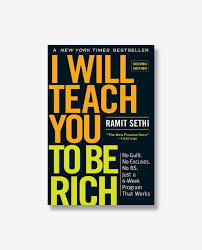

I Will Teach You to Be Rich

Ramit Sethi
Sinopsis
Buku ini adalah panduan modern dan praktis tentang cara mengelola uang tanpa stres. Ramit Sethi menghadirkan pendekatan yang menyenangkan, sederhana, dan realistis untuk generasi muda yang ingin mengatur keuangannya dengan efektif tanpa harus menjadi “ahli finansial”. Ia mengajarkan bagaimana menabung, berinvestasi, dan membelanjakan uang secara cerdas — tanpa merasa bersalah atau terbebani oleh aturan yang terlalu ketat.
Ramit memperkenalkan konsep “sistem keuangan otomatis”, di mana pengaturan tabungan, pembayaran tagihan, dan investasi dilakukan secara otomatis agar uang bekerja untuk kita. Buku ini juga membahas cara memilih rekening bank terbaik, kartu kredit yang menguntungkan, hingga cara bernegosiasi dengan lembaga keuangan. _I Will Teach You to Be Rich_ tidak hanya soal menabung, tapi tentang membangun gaya hidup kaya yang seimbang antara kebebasan finansial dan kebahagiaan pribadi.
Pelajaran utama
- Otomatisasi keuangan membuat pengelolaan uang lebih mudah dan bebas stres.
- Fokuslah pada hal-hal penting: menabung, berinvestasi, dan menghindari utang konsumtif.
- Kekayaan bukan hanya tentang angka, tetapi juga tentang kebebasan memilih cara hidup.
- Kendalikan uangmu — jangan biarkan uang yang mengendalikan hidupmu.